ⓘ Reglas Generales
▼Fase 1 - Reclutar: 13 bazas. Se revela 1 carta del mazo. El líder juega una carta, el rival debe seguir facción si puede (Regla de Arrastre). Gana la carta del centro el de valor más alto de la facción líder. El perdedor roba del mazo.
Fase 2 - Simpatizantes: 13 bazas con las cartas ganadas. Se compite por las 2 cartas jugadas. Regla de arrastre vigente.
Victoria: Ganas el voto de una facción teniendo más cartas de ella en tu pila de Simpatizantes. Gana la partida quien consiga 3 votos.
Reglas para 3 y 4 jugadores: Añade 2 facciones al mazo y reparte a cada jugador:
- En una partida a 3 jugadores: 12 cartas.
- En una partida a 4 jugadores: 9 cartas.
⚔️ Facciones
 Goblins
Goblins
Poder: No tienen poderes especiales.
 Caballeros
Caballeros
Poder: Cuando juegas un Caballero después de un Goblin, el Caballero gana automáticamente al Goblin, independientemente de su valor. Debes seguir la regla de arrastre si puedes.
 Enanos
Enanos
Poder (Fase 2): El perdedor de la baza coloca en su pila de Simpatizantes todas las cartas de Enano jugadas. El ganador se lleva las que no sean de Enano.
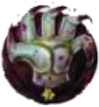
No MuertosPoder (Fase 1): Las cartas jugadas de No-Muertos no se descartan. Se añaden a la pila de Simpatizantes del ganador de la baza. Si una carta de No-Muerto está en el centro y es ganada, va al mazo de Seguidores.
 Doppelgängers
Doppelgängers
Poder: Facción comodín. Puedes jugarlo en vez de seguir a la facción líder, aunque tengas cartas de esa facción. Se considera de la misma facción que la carta jugada por el Líder, pero NO copia sus poderes.
Poder (Fase 2): Se colocan boca arriba delante de ti, no en la pila de Simpatizantes. Al final de la partida, los que queden se mueven a la pila de Simpatizantes.
 Gigantes
Gigantes
Poder (Fase 2): Si ganas la baza, cada Gigante jugado puede aplastar un Gnomo del oponente del mismo valor. El Gnomo aplastado se descarta y no puntúa.
Poder: El último jugador en jugar un Dragón en una baza será el Líder de la siguiente baza, sin importar el valor o quién ganó la baza.
Poder (Fase 2): Solo se puede conseguir 1 Troll por baza. Si se juegan dos, el ganador se lleva el de mayor valor y el otro se aparta para el ganador de la siguiente baza.
 Videntes
Videntes
Poder (Fase 1): Si ganas la baza con una Vidente, puedes mirar la carta superior del mazo y elegir entre tomar esa o la del centro de la mesa.
 Cíclopes
Cíclopes
Poder: Al final de la partida, el jugador con MENOS cartas de Cíclope gana el voto (debes tener al menos 1). En empate, gana el de menor valor en mesa.
 Elfos
Elfos
Poder: Sin poder especial
 Orcos
Orcos
Poder: Sin poder especial.
 Elfos/Orcos
Elfos/Orcos
Poder: En la Fase 1 o 2, cuando juegas una carta de doble facción, debes anunciar si la juegas como Elfo o como Orco.
En la Fase 2, si ganas esta carta, cuenta como la facción que fue anunciada al jugarla. Puedes girar la carta para indicar de qué facción es.
Poder: Si ganas con un Mago, roba una carta de Poción (boca abajo). Durante otra baza puedes voltearla para alterar el valor de tu carta (suele subir, pero puede bajar).
Poder (Fase 1): Si pierdes tras jugar un Druida, se queda delante de ti girado 180º (se convierte en Oso). Tu siguiente carta jugada obtiene +3 a su valor.
Poder (Fase 1): Al jugarlo, se intercambia con la carta del centro de la mesa. Ahora competiréis por el Cambiaformas.
 Basiliscos
Basiliscos
Poder: Si juegas esta carta después de una del mismo valor, colocas la carta del oponente en tu pila de Simpatizantes, ganas la baza y lideras la siguiente.
 Fénix
Fénix
Poder (Fase 2): Si pierdes jugando un Fénix, roba una carta de Fuego de Fénix a tu mano. Funciona exactamente como un Fénix normal.
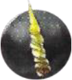
UnicorniosPoder (Fase 2): Cada carta de Unicornio ganada aumenta el valor de las cartas de OTRA facción que juegues en +1 por Unicornio. No afecta a la puntuación final.
 Vampiros
Vampiros
Poder (Fase 2): Se colocan boca arriba. Las cartas de otras facciones ganadas se ponen DEBAJO del Vampiro. Cuentan para el voto de Vampiros, no para su facción original. Al final se suman valores.
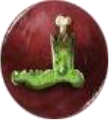
ZombisPoder (Fase 1): Si ganas la baza con un Zombi, la carta jugada por tu oponente va a tu pila de Simpatizantes.
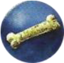
Hombres LoboPoder: Se usan 2 cartas de Luna (Llena/Sin luna). Si gana la baza el Hombre Lobo, se cambia la carta de Luna. Sin luna arriba: gana el de menor valor. Luna llena arriba: gana el de mayor valor.
Poder: Se barajan las 20 y se meten 10 al azar. Nadie sabe qué valores hay en juego durante la partida.
 Demonios
Demonios
Poder: Al jugarla solo se sabe si es Par o Impar. Su valor real se comprueba al resolver la baza.
 Elementales de Fuego
Elementales de Fuego
Poder: Al jugarla solo se sabe si es Alta (5-9) o Baja (0-4). El valor se comprueba al resolver.
 Pícaros
Pícaros
Poder: Hay 2 copias de cada valor. Una verdadera y una falsa (marcada con X). El engaño se comprueba al final de la partida, descartando las cartas con X.
 Envenenadores
Envenenadores
Poder: Se ponen 3 cartas de Veneno boca arriba. Si ganas con un Envenenador puedes mirar una con el Filtro Revelador. Al final, se descartan de las pilas las cartas que coincidan con los valores de veneno revelados.
 Reyes de Hielo
Reyes de Hielo
Poder: Antes de determinar el voto de la facción: descarta de la pila de simpatizantes todas las parejas de Rey del hielo/Reina del hielo que tengan el mismo valor: ¡se casan y se escapan!.
 Reinas de Hielo
Reinas de Hielo
Poder: Antes de determinar el voto de la facción: descarta de la pila de simpatizantes todas las parejas de Rey del hielo/Reina del hielo que tengan el mismo valor: ¡se casan y se escapan!.
Poder: Incluso si ganas la baza con un Yeti, NO serás el Líder de la siguiente baza.
 Bestias del Hielo
Bestias del Hielo
Poder (Fase 2): Si ganas la baza con esta carta, la otra carta jugada se descarta y no la colocas en tu pila de Simpatizantes.
 Ángeles
Ángeles
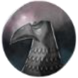
Poder: Al final de la partida, si no hay otras cartas en tu pila de Simpatizantes con el mismo número que una determinada carta de Ángel, esa carta cuenta x2 para determinar el apoyo de la facción.
Poder: Las Águilas no pueden liderar dos bazas consecutivas, a excepción de que el jugador únicamente tenga Águilas en la mano.
Poder: Al final de la partida, ¡todas las cartas de Pterosaurio de valor ≥ 7 se extinguen! Dichas cartas no cuentan para la determinación de la mayoría en la facción.
Poder (Fase 2): Fase 2: puedes descartar cualquier número de Elementales de Luz de tu pila de Simpatizantes para potenciar una carta jugada. Cada carta descartada potencia a la carta jugada en +1.
 Buitres
Buitres
Poder: Al final de la partida, si ganas la mayoría en la facción de Buitres, baraja la pila de descarte de la Fase 1 y roba 2 cartas. Añade esas cartas a tus pilas de Simpatizantes correspondientes.
 Monjes Solares
Monjes Solares
Poder: Cuando se juega un Monje del Sol, una regla especial del arrastre obliga al otro jugador a jugar un Monje de la Estrella. Si el otro jugador acompaña correctamente, el valor más alto de ambos gana la baza. Un Monje del Sol jugado tras otro Monje del Sol se consideran de facciones distintas, ganando la baza automáticamente el primer jugador.
Poder: Cuando se juega un Monje de la Estrella, una regla especial del arrastre obliga al otro jugador a jugar un Monje del Sol. Si el otro jugador acompaña correctamente, el valor más alto de ambos gana la baza. Un Monje de la Estrella jugado tras otro Monje de la Estrella se consideran de facciones distintas, ganando la baza automáticamente el primer jugador.
 Profetas
Profetas
Poder (Fase 2): El ganador del favor de los Profetas se determina en función del número de runas. Si hay al menos 3 runas combinadas en la pila de Simpatizantes de un jugador, el Profeta con el mayor valor gana. Si no hay menos de 3 runas, el Profeta con el menor valor gana la baza.
Las runas son iconos  en las cartas de Profeta.
en las cartas de Profeta.
Poder (Fase 2): Fases 1 y 2: cuando se juega una baza con un Gusano de Arena, se juega boca abajo. Cuando todos los jugadores han jugado carta, las cartas se revelan.
Poder (Fase 2): Cuando añades un Escorpión a tu pila de Simpatizantes, debes tomar una carta de picadura. Las cartas de picadura te darán una penalización o un bonus especial para la siguiente baza que juegues. Después, se descartan. Si el mazo de picaduras se agota, baraja el descarte para formar un nuevo mazo.
 Piratas
Piratas
Poder: Al final de la partida, si un jugador tiene un Pirata y un Royal Navy del mismo valor, el Pirata es arrestado. Dicho Pirata cuenta como una carta de Royal Navy para determinar la mayoría de la facción (ya no cuenta como Pirata).
Poder: Al final de la partida, si un jugador tiene un Pirata y un Royal Navy del mismo valor, el Pirata es arrestado. Dicho Pirata cuenta como una carta de Royal Navy para determinar la mayoría de la facción (ya no cuenta como Pirata).
 Monstruos Marinos
Monstruos Marinos
Poder: Fase 1: si un Monstruo marino es revelado como carta central, los jugadores deben intercambiar una carta de su mano cada uno. Las cartas con el otro jugador se intercambian boca abajo.
 Pulpos
Pulpos
Poder (Fase 2): Las cartas de valor ≥ 8 de cualquier otra facción ganan siempre a un Pulpo (tenga éste el valor que tenga).
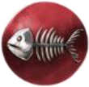
Hombres PezPoder (Fases 1 y 2): Si pierdes una baza en la que jugaste un Hombre pez, toma una carta de tridente del mazo de robo o de otro jugador si el mazo de tridentes se ha agotado. El valor de todos los Hombres pez se incrementa en +1 por cada carta de tridente que poseas.
Poder (Fase 2): Si ganas un Elfo oscuro en una baza, debes descartar y retirar del juego una carta de otra facción en tu pila de simpatizantes. Si solamente hay Elfos oscuros entre tus simpatizantes, no tienes que descartar ninguna carta. Si ganas más de un Elfo oscuro en una baza, sigues teniendo que descartar solo una carta de otra facción.
 Fantasmas
Fantasmas
Poder (Fase 1): Puedes añadir el Fantasma a tu pila de seguidores perdiendo la carta que normalmente adquirirías, tanto si pierdes como si ganas la baza. Si ganas y te quedas con el Fantasma, ponlo en tu pila de seguidores y descarta la carta boca arriba sobre la mesa. Si pierdes y eliges quedarte con el Fantasma, ponlo en tu pila de seguidores y descarta la primera carta del mazo boca abajo (sin mirarla).
 Sirenas
Sirenas
Poder (Fase 1): Cuando obtienes una Sirena para tu pila de simpatizantes, colócala boca arriba. Tus siguientes cartas jugadas obtienen -1/por cada Sirena que haya.
 Minotauros
Minotauros
Poder (Fase 2): Si eres el líder y ganas la baza jugando un Minotauro, el otro jugador puede devolver la carta que jugó a su mano.
 Manitas
Manitas
Poder (Fase 2): Si un Manitas gana a otra carta superando su valor en ≥ 4, ¡el Manitas explota! La otra carta se descarta del juego. El jugador que jugó al Manitas sigue considerándose el ganador de la baza.
Poder: Si una Valkiria se juega tras cualquier otra carta de facción y el valor de la Valkiria supera en ≥ 3 al valor de la primera carta, la Valkiria se convierte en una carta de esa otra facción a todos los efectos.
 Sátiros
Sátiros
Poder (Fase 1): Si la carta por la que los jugadores compiten es un Sátiro, el segundo jugador no tiene que seguir la regla del arrastre. El valor más alto de las cartas jugadas gana la baza, independientemente de la facción que comenzó.
Poder: Tras la Fase 1, baraja las cartas descartadas para formar un mazo de cementerio. Si en la Fase 2 ganas una baza con un Resucitador, roba una carta del mazo de cementerio y añádela a tu pila de simpatizantes.
 Autómatas
Autómatas
Poder (Fase 1): Si ganas una baza con una carta de Autómata, ganas también la siguiente baza de forma automática.
 Bardos
Bardos
Poder: El voto de los Bardos lo gana aquel jugador que tenga una mayor cantidad de Bardos de valores consecutivos. En caso de empate, gana el que tenga el Bardo de mayor valor dentro de esta serie.
 Mapaches
Mapaches
Poder: Cada Mapache con
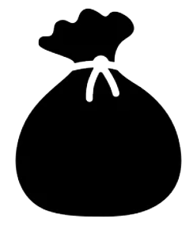
(botín) aumenta en 1 el número de cartas de la facción con menos votos que tengas.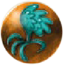
GrifosPoder (Fase 2): Si un jugador con Grifos en su pila de Simpatizantes juega una carta con un valor igual a uno de ellos, su valor aumenta en +5.
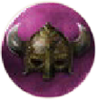
VikingosPoder: Una carta de Vikingo cuenta como dos votos si hay otra carta de cualquier facción el mismo valor en la pila de Simpatizantes.
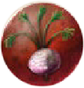
CampesinosPoder: Un Campesino abandona tu reino si no tienes una carta de Realeza del mismo valor o de hasta un máximo de 3 superior.
 Realeza
Realeza
Poder: Un Campesino abandona tu reino si no tienes una carta de Realeza del mismo valor o de hasta un máximo de 3 superior.
Poder (Fase 1): Si ganas una baza con un Úrsido, puedes colocar la siguiente carta revelada en la parte inferior del mazo y sacar una nueva carta.
 Insectoides
Insectoides
Poder: Al final de la partida, el Insectoide se arrastrará hasta el otro jugador si no tienes otra carta de Insectoide con un valor 1 o 2 puntos inferior o superior.
🧙 Héroes
ⓘ Reglas de los Héroes
▼Al comienzo de la partida, baraja el mazo de cartas de Héroe y separa 5 boca abajo. Luego, baraja como siempre el mazo central y retira 5 cartas de la parte superior sin mirar. Añade las 5 cartas de Héroe al mazo central y barájalo. Coloca el mazo en el centro de la mesa y reparte 13 cartas a cada jugador.
Ahora, además de las facciones habituales, hay algunas cartas de Héroe en el mazo. Se juegan y utilizan como cartas normales, pero cada una tiene su propia habilidad única. Al jugarlas, se tienen en cuenta las siguientes reglas:
- Si el Héroe es la primera carta jugada, el jugador contrario puede jugar cualquier facción. No hay una facción "líder" para esta baza. Los valores (y cualquier habilidad especial) determinarán al ganador.
- Si el Héroe es la segunda carta jugada, se considera que pertenece a otra facción. Por lo tanto, la facción líder del oponente sigue teniendo ventaja.
Cuando consigues Héroes en la Fase 2, no cuentan como una facción específica y no cuentan para la puntuación final de partida (a menos que se indique lo contrario). Los Héroes prevalecen sobre los poderes de las Facciones y Lugares Mágicos, si hubiera conflicto, pero los artefactos prevalecen sobre todos.
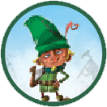
Bardo CantarínPoder: En la siguiente baza serás el líder.
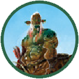
Arquero CentauroPoder: Si la carta jugada por el Líder es de valor 5 o 6, ganas la baza.
Poder: Si juegas esta carta en la Fase 2, aumenta su valor en +1 por cada Simpatizante que hayas conseguido previamente.
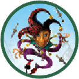
BufónPoder: Si juegas esta carta después de la de Líder, intercambiáis las cartas. La baza se resuelve con el resultado de las cartas nuevas.
Poder: Si eres el Líder y pierdes al jugar esta carta, toma una carta de la pila de Simpatizantes de tu oponente.
Poder: Si juegas esta carta siendo el Líder, solo puedes perder contra un número par mayor que 5.
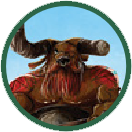
MinotauroPoder: Si esta es la última carta que juegas en la Fase 1 o 2, ganas automáticamente la baza.
Poder: Si el Líder juega una carta de valor entre 1-4, su carta es descartada y ganas la baza.
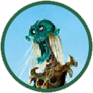
NigromantePoder: Puedes intercambiar esta carta de tu mano con una que esté a punto de ser descartada (Fase 1).
Poder: Si juegas esta carta después de otra facción, copia las habilidades de esa facción como si perteneciese a ella. No cuenta como esa facción en la puntuación final.
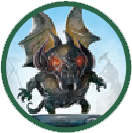
GárgolaPoder: Si consigues esta carta en la Fase 2, cuenta como dos cartas de cualquier otra facción.
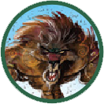
Hombre LoboPoder: Cuando la juegues, puedes cambiar el valor de esta carta a 5 y que cuente como otra facción (no copia sus habilidades).
Poder: En la Fase 2, puedes devolver esta carta a la mano si pierdes la baza.
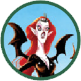
Reina VampiraPoder: Todas las cartas jugadas contra esta carta pierden sus poderes especiales.
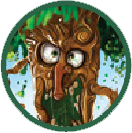
EntPoder: Si juegas esta carta en la Fase 2, puedes convertirla en una facción de la que tengas al menos dos cartas en tu pila de Simpatizantes.
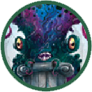
KrakenPoder: Si ganas la baza con esta carta en la Fase 2, toma una carta aleatoria de la mano de tu oponente. Luego, dale una carta de tu mano a tu elección (no puede ser la que le has robado).
Poder: Si juegas esta carta en la Fase 2, el ganador no se lleva Simpatizantes. Las cartas se descartan. El jugador que hubiese ganado la baza es el Líder en la siguiente.
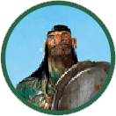
Guerrero InvenciblePoder: No tiene poderes especiales, pero tiene un valor alto.
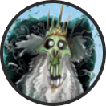
Rey LichePoder: El valor de la carta jugada después del Rey Liche disminuye en -3.
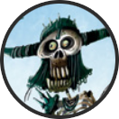
EsqueletoPoder: Si ganas una baza con el Esqueleto, puedes tomar una carta aleatoria de la pila de descarte y llevarla a tu mano.
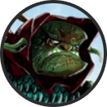
BrujoPoder: Si juegas el Brujo después de una carta con un valor impar, ganas la baza.
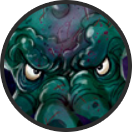
CthulhuPoder: Si juegas a Cthulhu en la Fase 1, devuelve a la caja las dos primeras cartas del mazo central. Si lo juegas en la Fase 2, ambos jugadores deben descartar 1 carta de su mano, a su elección.
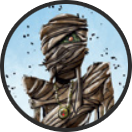
MomiaPoder: Si juegas la Momia después de una carta con valor 7 o superior, ganas la baza.
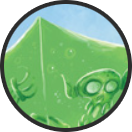
Cubo GelatinosoPoder: En la Fase 2: Si el Cubo Gelatinoso es la segunda carta jugada en una baza, coloca la carta del líder debajo de ella. El ganador de la siguiente baza consigue también el Cubo Gelatinoso y la carta que se encuentra debajo.
💎 Artefactos
ⓘ Reglas de los Artefactos
▼Al comienzo de la partida, baraja el mazo de cartas de Artefacto. Reparte 3 cartas de Artefacto a cada jugador, boca abajo.
Devuelve las demás a la caja, ya que no se usarán en esta partida. Durante la partida, los jugadores pueden jugar sus cartas de Artefacto. Las reglas indican cuándo y cómo se pueden jugar. Cada una de estas cartas tendrá un poder especial asociado, y si las juegas con astucia ¡pueden proporcionarte una buena ventaja! Las cartas de Artefacto no van a tu mano.
Un jugador puede utilizar un Artefacto en cualquier momento. Una vez jugado, se descarta. Los poderes de los Artefactos prevalecen sobre los poderes de los Héroes, Facciones y Lugares Mágicos, si hubiera conflicto.
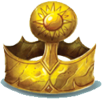
Corona de la LuzPoder: Juega este artefacto al final de la partida. Añádelo a cualquiera de tus facciones. Cuenta como una carta de valor 5 de esa facción.
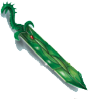
Espada de la SerpientePoder: Juega este artefacto cuando juegues una carta de tu mano. El valor de esa carta aumenta en +3.
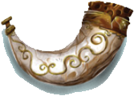
Cuerno del SilencioPoder: Juega este artefacto en la Fase 2, después de que cada jugador haya jugado una carta. Cada jugador toma inmediatamente la carta que ha jugado y la coloca en su pila de Simpatizantes, independientemente del resultado de la baza. El jugador que hubiese ganado la baza será el Líder de la siguiente baza.
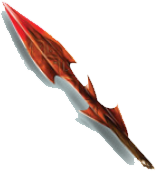
Lanza de la VenganzaPoder: Juega este artefacto al perder una baza en la Fase 2. Descarta una de las cartas jugadas antes de que el ganador se lleve los Simpatizantes.
Poder: Juega este artefacto en la Fase 1, cuando vayas a robar una carta de la parte superior del mazo (al perder la baza). En vez de eso, roba 3 cartas y elige 1. Devuelve el resto al mazo y barájalo.
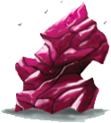
Cristal de los IlusosPoder: Juega este artefacto en la Fase 2, en el momento de colocar las cartas en tu pila de Simpatizantes (al ganar la baza). Intercambia una de las cartas que fueses a colocar con una de tu mano.
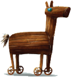
Caballo del MagoPoder: Juega este artefacto después de que cada jugador haya jugado una carta. Intercambia la carta que has jugado con una de tu mano. Luego, la baza se resuelve como de costumbre.
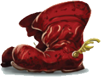
Botas VoladorasPoder: Juega este artefacto en cualquier momento. El valor de las siguientes dos cartas que juegues aumenta en +2.
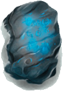
Piedra Rúnica OlvidadaPoder: Juega este artefacto en la Fase 2, en el momento de colocar las cartas en tu pila de Simpatizantes (al ganar la baza). Descarta una de esas cartas y coloca este artefacto debajo de una carta de Simpatizante que hayas conseguido previamente. La Piedra Rúnica Olvidada cuenta como una carta adicional de esa facción.
Poder: Juega este artefacto después de ganar una baza en la Fase 2. Roba 3 cartas de la mano de tu oponente, míralas y devuélveselas. Tu oponente debe tener al menos 5 cartas en su mano para que puedas jugar este artefacto.
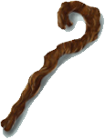
Bastón del OrdenPoder: Juega este artefacto después de haber perdido una baza. Serás el Líder en la siguiente baza.
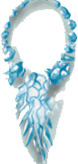
Collar de EscarchaPoder: Juega este artefacto en la Fase 2, después de que cada jugador haya jugado una carta. Coloca esas cartas a un lado y jugad otra baza (el líder sigue siendo el mismo). El ganador de esta segunda baza será quien consiga las cartas de ambas bazas.
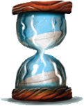
Reloj de Arena DivinoPoder: Juega este artefacto después de que cada jugador haya jugado una carta. Ambos jugadores se llevan sus cartas jugadas de vuelta a su mano y se juega otra baza.
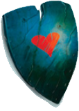
Escudo del VeloPoder: Juega este artefacto cuando tu oponente juegue una carta. El valor de su carta disminuye en -3.
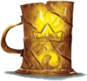
Jarra de los ReyesPoder: Juega este artefacto cuando juegues una carta de tu mano. Esa carta cambia a una facción de tu elección.
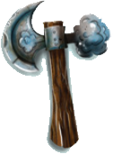
Hacha de las NubesPoder: Juega este artefacto en cualquier momento. El valor de las siguientes dos cartas que juegue tu oponente disminuyen en -2.
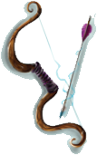
Arco de los EnamoradosPoder: Juega este artefacto cuando seas el Líder de la baza. Ambos jugadores deben jugar dos cartas en vez de una. La primera carta que juegas es la facción líder, y tu segunda carta debe seguir la facción, si es posible. Todas las cartas cuentan para el resultado de la baza.
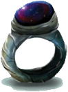
Anillo NocturnoPoder: Juega este artefacto cuando juegues tu carta no siendo Líder. No estás obligado a seguir la facción líder, y no necesitas la misma facción para ganar, solo el número más alto.
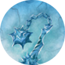
Mayal del AlbaPoder: Juega esta carta al comienzo de la Fase 2. Tu oponente debe colocar una carta de su mano (a su elección y boca abajo) debajo de esta carta. Esa será la carta que deberá jugar en la última baza.
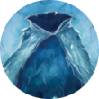
Capa de CazaPoder: Después de jugar carta como Líder, toma una carta aleatoria de la mano de tu oponente. Esa será la carta que juegue en esta baza.
Poder: Si tu oponente juega una carta con valor 5, puedes jugar esta carta para inmediatamente colocar la suya en tu pila de Simpatizantes. Tu oponente puede jugar otra carta en su lugar.
Poder: Juega esta carta en la Fase 1. Durante las dos próximas bazas de la Fase 1, el jugador que tome la carta de la parte superior del mazo debe revelársela al otro jugador.
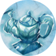
Lámpara MágicaPoder: En la Fase 2, si eres el Líder, puedes jugar esta carta y anunciar qué carta quieres que juegue tu oponente (la facción y el número). Si tiene la carta anunciada, debe jugarla incluso si no sigue a la facción Líder. Si no tiene la carta anunciada, puede jugar cualquier carta y ganará automáticamente la baza.
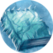
Libro del ApostadorPoder: Juega esta carta al inicio de la Fase 2, después de llevarte a la mano las cartas de Seguidores. Descarta una carta aleatoria de tu mano, y toma una carta a tu elección de la pila de descarte.
Poder: Juega esta carta en la Fase 2, después de ganar una baza. Descarta una carta que fueses a colocar en tu pila de Simpatizantes, toma una carta a tu elección de la pila de descarte y colócala en tu pila de Simpatizantes.
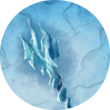
Varita MágicaPoder: Juégala después de jugar tu carta. Puedes ajustar el valor de tu carta en 2, hacia arriba o hacia abajo.
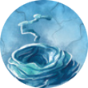
Cuerda InterminablePoder: Juega esta carta en la Fase 2. Toma una carta de tu pila de Simpatizantes y añádela a tu mano.
Poder: Juega esta carta si eres el Líder. La carta de menor valor gana la baza.
Poder: Juega esta carta si pierdes 3 bazas seguidas. Tu siguiente carta aumenta en +9.
Poder: En las dos bazas siguientes, el Líder juega su carta boca abajo. Después de que su oponente haya jugado su carta, la carta del Líder es revelada.
Poder: Juega esta carta antes de que el Líder juegue la suya. Ambos jugadores barajan su mano y juegan una carta al azar.
Poder: Juega esta carta después de que juegues tu carta. Si tu carta tiene un valor de 5 o menos, auméntalo en +5. Si tiene un valor mayor que 5, disminúyelo en -5.
Poder: Juega esta carta en la Fase 2, antes de que juegues tu carta como Líder. Juega una carta de tu pila de Simpatizantes en vez de tu mano.
Poder: Juega esta carta después de que ambos jugadores hayáis jugado vuestras cartas, pero antes de resolverlas. Ambas cartas se quedan congeladas en la mesa y sus habilidades especiales se ignoran. El Líder de esta baza es el Líder de la siguiente. Añade los valores de las cartas congeladas a las nuevas cartas jugadas. El ganador obtiene todas las cartas.
🗺️ Localizaciones
ⓘ Reglas de los Lugares Mágicos
▼Hay dos tipos de Lugares Mágicos: los "Edificios", con pergamino azul, y los "Escenarios", con pergamino negro. Al preparar la partida, baraja los dos tipos de Lugares Mágicos por separado y forma dos mazos.
Puedes jugar esta expansión de 3 formas diferentes:
- Roba una carta de Edificio al comienzo de la partida y déjala boca arriba durante toda la partida. Aplica el efecto detallado en la carta. Esto normalmente cambiará las reglas de fin de la partida.
- Roba una carta de Escenario al comienzo de la partida y déjala boca arriba durante toda la partida. Aplica el efecto detallado en la carta. Esto normalmente cambiará la forma en la que las cartas interactúen entre sí.
- Puedes robar tanto una carta de Escenario como de Edificio y aplicar ambos efectos durante toda la partida.
Los efectos de los Lugares Mágicos son superados por los poderes de Facciones, Héroes y Artefactos.
Poder: El jugador que gane la última baza de la Fase 1, y el que gane la última baza de la Fase 2, se llevan el voto de una facción adicional. Por lo tanto, para la puntuación final, contamos con 2 facciones adicionales.
Poder: En la Fase 2: El primer jugador en conseguir 3 cartas de una facción gana su voto (los Cíclopes se puntúan como de costumbre).
Poder: Al final de la partida: Debéis descartar todas las cartas conseguidas con valor 3 o menos. Luego, se puntúa como de costumbre.
Poder: Al final de la partida: Cada jugador cuenta el total de cartas en su pila de Simpatizantes. Si un jugador ha conseguido el doble (o más) de cartas que su oponente, pierde automáticamente la partida. En caso contrario, se puntúa como de costumbre.
Poder: Al final de la partida: El ganador será quien haya conseguido más sets completos de las 5 facciones (un set completo consta de 1 carta de cada facción). En caso de empate, se puntúa como de costumbre.
Poder: Al final de la partida: Si tienes más de 5 cartas de una facción, debes descartar 4 cartas de esa facción (las de menor valor) antes de puntuar.
Poder: Al final de la partida: Suma los valores de las cartas de cada facción para determinar quién gana su voto. En caso de empate, la cantidad de cartas determina al ganador del voto.
Poder: Al final de la partida: Todas las cartas conseguidas con números impares se descartan. Luego, se puntúa como de costumbre.
Poder: Al final de la partida: El jugador que haya conseguido la mayor cantidad de Simpatizantes es el ganador. En caso de empate, se puntúa como de costumbre.
Poder: Durante la partida: El valor 2 se considera el valor más alto de cada facción.
Poder: Durante la Fase 1: El jugador que pierde la baza obtiene la carta del centro de la mesa, en lugar del ganador.
Poder: Al comienzo de la Fase 2: Los oponentes intercambian 3 cartas, antes de comenzar la Fase.
Poder: Al comienzo de la Fase 1: Los oponentes intercambian 5 cartas, antes de comenzar la Fase.
Poder: Durante la Fase 1: Se revelan dos cartas del mazo central. El ganador de la baza elige cuál obtiene y la otra se coloca en la parte inferior del mazo. El perdedor toma la carta de la parte superior del mazo como de costumbre. En la última baza, el ganador elige una carta y el perdedor obtiene la otra.
Poder: Si un jugador gana 3 bazas seguidas, el otro jugador será el Líder de la siguiente baza.
Poder: Al comienzo de la Fase 2: Cada jugador debe descartar 2 cartas de su mano a su elección.
Poder: Si un jugador pierde una baza, aumenta en +1 el valor de la siguiente carta que juegue.
Poder: Al final de la partida, cada jugador debe elegir dos cartas de su pila de Simpatizantes (menos aquellas que deban quedarse boca arriba) y dárselas a su oponente, quien las añadirá a su pila de Simpatizantes.
Poder: Quien haya ganado la última baza de la partida debe descartar 2 cartas aleatorias de su pila de Simpatizantes.
Poder: En la Fase 2: Si un jugador pierde 5 bazas seguidas, gana automáticamente la partida.
Poder: Al final de la partida, si un jugador tiene 5 cartas o menos en su pila de Simpatizantes, gana automáticamente la partida.